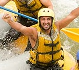

"Hands down the best outdoor adventure I've ever had! As a first-time rafter, I was a little nervous, but the guides at Capybara Rapids made us feel completely safe while tackling the wildest rapids. I couldn't stop smiling the entire trip!" — Mark T.